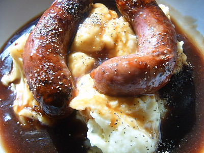

Home
Bangers and Mash Potatoes

"Bangers & Mash" by Annie Mole is licensed under CC BY 2.0 
 .
.
Description
Mashed potatoes and fried sausages with optional gravy
Ingredients
- 500grams of sausages
- Potatoes
- butter
- gravy
Steps
Prepare sausages
- Heat up oil
- Fry sausages till brown
Prepare Mashed potatoes
- Peel potatoes and boil till soft
- Mash with dash of milk, 150g of butter, with salt and pepper
Enjoy